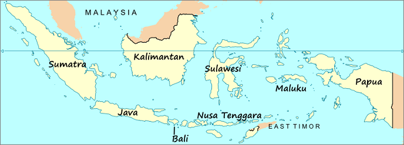
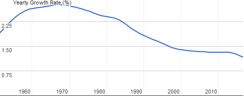
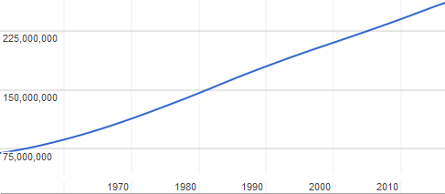
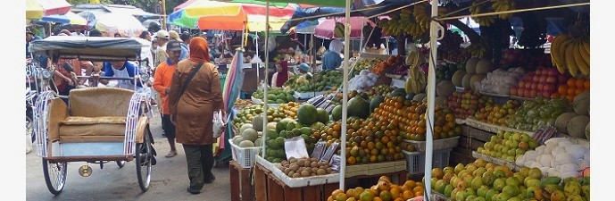

Dengan jumlah total populasi sekitar 260 juta penduduk, Indonesia adalah negara berpenduduk terpadat nomor empat di dunia. Komposisi etnis di Indonesia amat bervariasi karena negeri ini memiliki ratusan ragam suku dan budaya. Meskipun demikian, lebih dari separuh jumlah penduduk Indonesia didominasi oleh dua suku terbesar. Bagian ini membahas struktur dan cirikhas penduduk Indonesia.
Dua suku terbesar ini adalah Jawa (41 persen dari total populasi) dan suku Sunda (15 persen dari total populasi). Kedua suku ini berasal dari pulau Jawa, pulau dengan penduduk terbanyak di Indonesia yang mencakup sekitar enam puluh persen dari total populasi Indonesia. Jika digabungkan dengan pulau Sumatra, jumlahnya menjadi 80 persen total populasi. Ini adalah indikasi bahwa konsentrasi populasi terpenting berada di wilayah barat Indonesia. Propinsi paling padat adalah Jawa Barat (lebih dari 43 juta penduduk), sementara populasi paling lengang adalah propinsi Papua Barat di wilayah Indonesia Timur (dengan populasi hanya sekitar 761,000 jiwa).
Motto nasional Indonesia 'Bhinneka Tunggal Ika' (yang artinya berbeda-beda tetapi tetap satu dalam bahasa Jawa Kuno) mencerminkan keanekaan varietas etnis, budaya dan bahasa yang dapat ditemukan dalam batas-batas negara yang merupakan negara kepulauan terbesar di dunia ini. Memang, kalau kita membayangkan seorang Papua yang menganut animisme atau agama Kristen bertemu dengan seorang Muslim dari Aceh ada lebih banyak perbedaan - dalam hal agama, pakaian, gaya hidup, tradisi, bahasa - antara kedua orang ini daripada ada kesamaan.
Peta Indonesia Komposisi budaya yang beragam di Indonesia ini sebenarnya merupakan hasil dari proses penjajahan yang panjang oleh negara Belanda. Dalam rentang waktu sekitar tiga abad negara kecil yang terletaknya di Eropa itu berhasil (secara bertahap) untuk memperluas kekuasaan politiknya di Nusantara - menaklukkan berbagai kerajaan pribumi - sampai perbatasannya sama dengan perbatasan masa kini. Dengan kata lain, selama masa pembentukan daerah penjajahan Belanda di Asia Tenggara itu semua budaya yang beragam tersebut menjadi bagian dari sebuah kesatuan politik yang di kemudian hari diwarisi oleh pemimpin nasional setelah Kemerdekaan Indonesia pada tahun 1945.
Di satu sisi keragaman budaya adalah berkah bagi perekonomian terbesar di Asia Tenggara ini. Setiap budaya menawarkan sesuatu yang menarik dan ini adalah sebabnya jutaan wisatawan asing berkunjung ke Indonesia setiap tahun (maka sektor pariwisata merupakan penghasil devisa yang penting). Misalnya, peninggalan budaya seperti candi Borobudur dan candi Prambanan di Jawa Tengah dan Yogyakarta atau budaya kontemporer seperti agama Hindu di pulau Bali adalah alasan bagi mereka untuk memesan tiket pesawat ke Indonesia.
Namun, adanya keanekaan keyakinan, agama, tradisi, etnis dan budaya juga berarti negara ini mengalami kesulitan dalam hal pemerintahan. Bahkan, dalam berbagai kesempatan telah ada bentrokan antara kelompok yang berakar pada perbedaan etnis atau agama. Peristiwa seperti ini 'merusak' motto nasional Indonesia Bhinneka Tunggal Ika itu.
Sayangnya, ada juga ketimpangan yang lumayan tinggi di Indonesia dan hal ini telah menyebabkan sentimen negatif di antara sebagian penduduk Indonesia. Misalnya, ketimpangan distribusi pendapatan (tercermin dari tingginya - dan meningkatnya - rasio Gini). Apalagi di antara penduduk yang tinggal di luar pulau Jawa kadang-kadang ada keluhan terhadap posisi dominan pulau Jawa dalam hal politik dan ekonomi (khususnya Jakarta). Emosi-emosi seperti ini menjadi alasan mengapa pemerintah Indonesia terpaksa mengantar negaranya ke era desentralisasi dalam periode pasca-Suharto.
Lima Propinsi dengan Populasi Tertinggi (dalam jutaan):| Number | Provinsi | Populasi 2000 | Populasi 2010 |
|---|---|---|---|
| 1 | Jawa Barat | 35.8 | 43.1 |
| 2 | Jawa Timur | 34.8 | 37.5 |
| 3 | Jawa Tengah | 31.2 | 32.4 |
| 4 | Sumatra Utara | 11.6 | 13.0 |
| 5 | Banten | 8.1 | 10.6 |
| Indonesia | 206.3 | 237.6 | |
Bagian ini membahas beberapa aspek penting menyangkut komposisi demografi Indonesia. Topik-topik yang dibahas antara lain pertumbuhan populasi Indonesia, struktur usia dan urbanisasi. Semua topik ini dihubungkan dengan kinerja perekonomian Indonesia.
Tingkat pertumbuhan populasi Indonesia antara tahun 2000 dan 2010 adalah sekitar 1.49 persen per tahun. Pertumbuhan tertinggi terjadi di propinsi Papua (5.46 persen), sementara pertumbuhan populasi terendah terjadi di propinsi Jawa Tengah (0.37 persen). Program Keluarga Berencana (KB) dikoordinasi oleh institusi pemerintah, yaitu Badan Kependudukan dan Keluarga Berencana Nasional (BKKBN). Program KB dimulai pada tahun 1968 semasa pemerintahan presiden Suharto dan sampai saat ini masih diteruskan oleh presiden-presiden penerusnya. Program ini - yang (sayangnya) tidak bisa diwajibkan - adalah strategi penting bagi pertumbuhan ekonomi Indonesia karena pertumbuhan populasi yang rendah akan menyebabkan tingkat PDB per kapita yang lebih tinggi, yang juga akan meningkatkan pendapatan, tabungan, investasi serta menurunkan tingkat kemiskinan. Pertumbuhan populasi diperkirakan sebesar sekitar 1.2 persen pada tahun 2015 berdasarkan data Bank Dunia.
Tingkat Pertumbuhan Populasi Indonesia (tahunan) Badan Pusat Statistik (BPS), lembaga statistik pemerintah, hanya melakukan penelitian menyeluruh pada struktur populasi Indonesia sekali setiap dekade. Menurut studi terakhir (dirilis pada tahun 2010), Indonesia memiliki jumlah penduduk 237.6 juta orang. Namun, menurut perkiraan-perkiraan belakangan ini (dari berbagai lembaga) Indonesia diperkirakan memiliki lebih dari 260 juta penduduk pada tahun 2017.
Menurut proyeksi yang dilakukan oleh Perserikatan Bangsa-Bangsa (PBB) dengan menilik populasi absolut Indonesia di masa depan, maka negeri ini akan memiliki penduduk lebih dari 270 juta jiwa pada tahun 2025, lebih dari 285 juta jiwa pada tahun 2035 dan 290 juta jiwa pada tahun 2045. Baru setelah 2050 populasi Indonesia akan berkurang.
Populasi Indonesia Menurut proyeksi PBB pada tahun 2050 dua pertiga populasi Indonesia akan tinggal di wilayah perkotaan. Sejak 40 tahun yang lalu Indonesia sedang mengalami sebuah proses urbanisasi yang pesat makanya sekarang sedikit lebih dari setengah jumlah total penduduk Indonesia tinggal di wilayah perkotaan. Proses ini menunjukkan perkembangan positif bagi ekenomi Indonesia karena urbanisasi dan industrialisasi akan membuat tumbuhnya ekonomi lebih maju dan menjadikan Indonesia negeri dengan tingkat pendapatan menengah ke atas.
Kota-kota terbesar di Indonesia ditemukan di pulau Jawa. Di sini kita menemukan ibu kota Jakarta yang memiliki lebih dari 10 juta penduduk menurut sensus resmi terbaru (data dari 2011). Angka yang tidak resmi kemungkinan besar jauh lebih tinggi. Selain itu, setiap pagi sejumlah besar pekerja berjalan dari dareah perkotaan satelit menuju Jakarta untuk melakukan pekerjaan mereka. Pada sore atau malam hari mereka berjalan pulang ke kota-kota satelit di sekitar Jakarta. Arus harian yang besar ini menyebabkan kemacetan lalu lintas yang parah di Jakarta.
Setelah Jakarta, kota-kota terbesar di Indonesia adalah Surabaya (Jawa Timur), Bandung (Jawa Barat), Bekasi (Jawa Barat), dan Medan (Sumatra Utara).
Populasi Rural dan Kota di Indonesia:| 1995 | 2000 | 2005 | 2010 | 2015 | 2020 | ||
|---|---|---|---|---|---|---|---|
| Populasi Rural (% populasi total) | 64 | 58 | 52 | 50 | 46 | 33¹ | |
| Populasi Kota (% populasi total) | 36 | 42 | 48 | 50 | 54 | 67¹ | |
Salah satu kekuatan penting dalam komposisi demografi Indonesia yang memiliki hubungan dengan perekenomian adalah penduduk usia muda yang ada di Indonesia. Indonesia memiliki kelimpahan warga dengan usia produktif kerja. Mereka adalah sebuah kekuatan buat ekonomi nasional (asal mereka bisa mendapatkan pendidikan yang memadai dan ada cukup banyak kesempatan kerja).
Rata-rata usia penduduk Indonesia adalah 28.6 tahun (perkiraan tahun 2016). Ini adalah median age yang berarti separuh dari populasi Indonesia berusia 28.6 tahun ke atas dan separuhnya lagi umurnya di bawah 28.6 tahun. Mengenai jenis kelamin, rata-rata median age wanita Indonesia adalah 29.1 tahun, sementara median age pria lebih muda setahun (28.1 tahun).
Di bawah ini adalah persentase penduduk Indonesia yang dikategorikan dalam tiga kelompok usia dan jenis kelamin.
Penduduk Indonesia Menurut Jenis Kelamin dan Kelompok Umur:| Persentase gabungan total populasi | Pria (absolut) | Wanita (absolut) | ||
|---|---|---|---|---|
| 0-14 tahun | 27.3 | 34,165,213 | 32,978,841 | |
| 15-64 tahun | 66.5 | 82,104,636 | 81,263,055 | |
| 65 tahun ke atas | 6.1 | 6,654,695 | 8,446,603 | |
Pada tahun 2010, sekitar 19 persen penduduk Indonesia adalah anak yang umurnya di bawah sepuluh tahun, sekitar 37 persen di bawah dua puluh tahun dan sekitar setengah populasi Indonesia berusia di bawah tiga puluh tahun. Angka-angka ini menunjukkan - dari perspektif demografis - bahwa Indonesia memiliki potensi besar dalam hal produktifitas dan kreatifitas.
Peredaman pertumbuhan penduduk yang disebabkan oleh penurunan tingkat kesuburan (yang mungkin saja disebabkan oleh hal-hal seperti semakin mudahnya akses mendapatkan alat-alat kontrasepsi, pendapatan yang lebih tinggi, urbanisasi dan tingkat pendidikan yang lebih tinggi untuk wanita) dapat membantu menstimulasi sebuah perubahan signifikan pada distribusi usia penduduk terhadap mereka yang masih dalam usia kerja (namun di kemudian hari penurunan angka kematian dan tingkat kesuburan akan menghasilkan populasi manula). Perubahan ini dapat mempercepat pertumbuhan ekonomi karena penduduk usia kerja bertambah sementara jumlah (relatif) anak yang masih bergantung pada orang-tua berkurang.
Proses ini dapat dianggap sebagai serangkaian gelombang. Gelombang pertama adalah ketika penduduk usia kerja mulai bekerja sehingga produksi pun menjadi meningkat. Dengan adanya pekerjaan berarti pendapatan pun menjadi lebih tinggi, rumah tangga pun akan menkonsumsi produk lebih banyak lagi. Rumah tangga akan menabung lebih banyak karena jumlah anak yang bergantung pada orang-tua berkurang sehingga tingkat investasi pun bertambah, sama seperti peningkatan modal dan pada akhirnya akan meningkatkan produksi perokonomian.
Gelombang demografi yang kedua terjadi ketika sebagian besar penduduk usia kerja mendekati masa pensiun dan mulai menabung dan berinvestasi untuk hari tua. Dengan demikian, hasil peningkatan akumulasi modal tersebut dapat membantu mendorong pertumbuhan ekonomi secara lebih lanjut. Setelah tahap ini akan terjadi keprihatinan ekonomi karena adanya stagnasi pertumbuhan penduduk dan populasi manula yang meningkat.
Saat ini posisi Indonesia berada di bagian tengah gelombang yang pertama. Baik angka kelahiran maupun tingkat kesuburan sama-sama turun dengan cepat dan penduduk usia kerja meningkat dengan cepat sementara total populasi Indonesia tumbuh dengan lamban. Hasilnya adalah kelompok usia di bawah tiga puluh tahun yang cukup besar (sekitar setengah dari total populasi, sekitar 125 juta penduduk Indonesia), yang secara potensial masuk usia produktif sehingga bisa berfungsi sebagai mesin perekonomian nasional.
Konsumsi domestik adalah sumber besar untuk kinerja PDB Indonesia yang secara berkelanjutan terus kuat. Apalagi konsumsi rumah tangga memberi andil lebih dari 55 persen pertumbuhan ekonomi keseluruhan. Konsumsi domestik yang terus kuat ini adalah salah satu alasan penting mengapa Indonesia mampu melewati krisis keuangan global tahun 2008-2009 dengan nilai rata-rata pertumbuhan PDB sekitar 5.6 persen pada tahun 2008-2010. Apalagi, karena pertumbuhan ekonomi yang solid banyak orang Indonesia sempat masuk warga kelas menengah. Menurut laporan Bank Dunia yang dirilis pada tahun 2012, sekitar tujuh juta warga Indonesia masuk ke dalam penduduk kelas menengah setiap tahun. Namun, setelah tahun 2013 depresiasi rupiah (terhadap dolar AS) dan suku bunga Bank Indonesia yang lebih tinggi (serta harga komoditas yang rendah di tengah pertumbuhan ekonomi global yang lesu) telah berhasil agak melemahkan kekuatan pasukan konsumen Indonesia ini.
Meskipun demikian, jika boleh sedikit mengkritik, ada juga jutaan penduduk usia kerja yang berpendidikan namun tidak mendapatkan pekerjaan di Indonesia. Mereka tidak dapat diserap pasar tenaga kerja. Karakteristik lainnya dari Indonesia adalah tingkat pengangguran terutama terjadi pada penduduk usia 15 - 24 tahun, jauh di atas rata-rata nasional. Untuk detil lebih lanjut mengenai pengangguran di Indonesia, silakan baca halaman kami yang membahas tentang pengangguran
| Number | Grup | % dari Populasi |
|---|---|---|
| 1 | Jawa | 42.65 |
| 2 | Sunda | 15.41 |
| 3 | Malay | 3.45 |
| 4 | Madura | 3.37 |
| 5 | Batak | 3.02 |
| 6 | Minangkabau | 2.72 |
| 7 | Betawi | 2.51 |
| 8 | Bugis | 2.49 |
| 9 | Banten | 2.05 |
| 10 | Banjar | 1.74 |
Dalam hal agama, mayoritas penduduk Indonesia menganut agama Islam. Sekitar 87.2 persen dari jumlah total penduduk Indonesia - atau 207.2 juta orang - adalah orang Muslim. Namun, Indonesia bukan negara Islam (hanya di Aceh hukum syariah diterapkan). Tapi meskipun negaranya sebuah demokrasi yang sekuler, prinsip-prinsip yang berdasarkan doktrin Islam memainkan peran penting dalam bidang politik, ekonomi dan masyarakat Indonesia.
Ada juga sekitar 16.5 juta orang Protestan (6.9 persen dari jumlah total penduduk Indonesia), 6.9 juta umat Katolik (2.9 persen dari populasi), dan 4 juta Hindu (1.7 persen) yang tinggal di Indonesia. Terakhir, terdapat minoritas kecil dari umat Buddha serta mereka yang menganut Konfusianisme, sebagian besar adalah masyarakat etnis Tionghoa.
Bertentangan dengan kebanyakan negara di dunia Barat, bagi banyak orang Indonesia agama masih tetap merupakan bagian penting dari identitas mereka. Untuk informasi lebih lanjut tentang topik ini, silakan kunjungi bagian Agama di Indonesia.